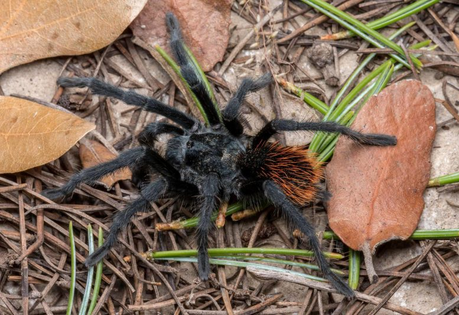
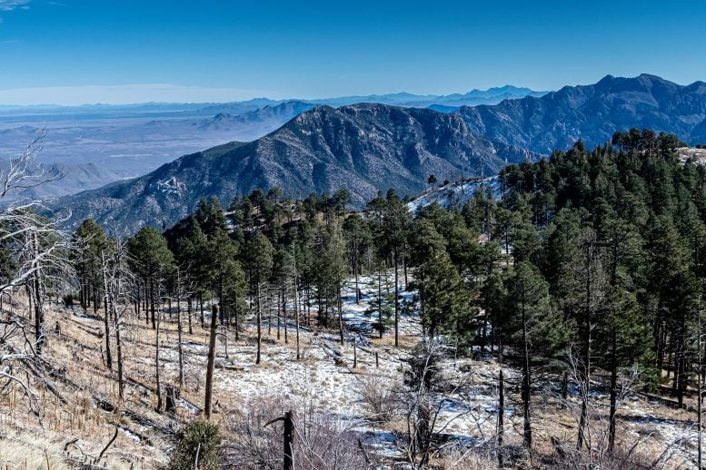

Researchers have discovered a new species of tarantula in southeastern Arizona’s Chiricahua Mountains. Named Aphonopelma jacobii, this small, black and grey tarantula has distinctive red hairs on its abdomen and thrives in the high-elevation habitats of the Chiricahua Mountains, enduring the region’s bitterly cold winters. The discovery of this species was rather unexpected. “We often hear about new species being discovered from remote corners of Earth, but it is remarkable that these spiders are found in our own backyard, albeit in somewhat difficult-to-access areas of our backyard,” said Dr. Chris Hamilton, assistant professor at the University of Idaho and co-lead author of a study in ZooKeys that reports on the spider. “With Earth in the midst of a human-mediated extinction crisis, it is astonishing how little we know about our planet’s biodiversity, even for conspicuous and charismatic groups such as tarantulas.”
The Chiricahuas are renowned for their exceptional biodiversity and high levels of endemism. These mountains form part of the Madrean Archipelago, also known as the Madrean Sky Islands, a complex of forested mountain ranges that span the Cordilleran gap between the Colorado Plateau and the Rocky Mountains in the southwestern United States and the Sierra Madre Occidental in northwestern Mexico. These montane forest “islands”—separated from each other by low-elevation deserts and arid grasslands—have evolved in isolation, leading to the origin of numerous short-range endemic species, and resulting in a mosaic of biodiversity unlike that of any other region in the United States.
The forests where these tarantulas live are threatened by several factors, perhaps most notably from climate change. Recent studies in the Sky Island region suggest that these forests will be “pushed off” the mountains over the next several decades as temperatures and precipitation continue to increase and decrease, respectively. Organisms adapted to these cooler and more humid mountain tops—such as these spiders—will likely become extinct as suitable habitat disappears.
Dr. Brent Hendrixson, professor at Millsaps College and co-lead author of the study adds, “These fragile habitats are also threatened by increased exurban development in the San Simon Valley and Portal areas, destructive recreational activities, and wildfires. In addition, there is some concern that these tarantulas will be exploited for the exotic pet trade due to their rarity, striking coloration, and docile disposition. We must consider the impact that unethical collectors might have on these spiders when determining the threats to this species and the implications for its conservation.” Aphonopelma jacobii is named after Michael A. Jacobi, who helped find several of the first specimens that led to the description of this new species.